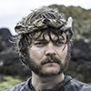

House Targaryen
Select a Season:
- 1
- 2
- 3
- 4
- 5
- 6
House Wins
Living Members
Importance to Episode
Want a more in-depth recap? Check out one of our favorite pods:
Binge Mode:Game of Thrones by The RingerJon Snow
Status:
Alive...Again
Current Location:
Dragonstone
Power Ranking:
3
Total Wins:
8
House Affiliations:
Probability of Survival:
84%
Leaderboard
Top 10
1
Daenerys Targaryen
Even though team Dany took an L this week, let's face it, she's still in the lead.
2
The Night's King
The White Walkers may not have made an appearance this week, but they don't have to. Winter is here and realms of men must find a way to unite or be destroyed.
3
Cersei Lannister
Has a crazy sailor after her "heart", obeying her commmands and wreaking havoc on every ship at sea. Successfully destroyed the majority of her enemy's ships, while still proving she is the most sinister person in all of the Seven Kingdoms with the kiss of death.
4
Jon Snow
King of the North headed South to meet the Mother of Dragons (among 17 other names). Conversations were a bit rocky at first, but his permits have been approved for Dragon Glass mining, and a budding alliance looks to be forming. Onward and upward.
5
Euron Greyjoy
Favorite element = Element of surprise. The midnight raid proved to be a strong move by the new King of the Iron Islands, along with a mid-day siege to trap the Unsullied. Wiped out 2 out of 3 Sands sisters, turned Theon back to Reek, wrapped up a pretty nice gift of traitors for Cersi, and is playing mind games with the King Slayer. Actions do speak louder then words....
6
Arya Stark
Heading back North for the annual Stark family reunion, still a wild card of danger, but she needs to stick to her kill list to stay in the top of the power rankings.
7
Bran Stark
Finally back at Winterfell, not great at explaining his new found role, but seems to know what needs to be done.
8

Sansa Stark
With great power, come great responsibility. And the need to avoid all of Little Finger's close talking. Queen of the North, holding strong.
9
Sam Tarly
The brain muscles are bulging, proving that his time at the Citedel is being well spent. Curing grey scale and building up some solid karma with powerful people, but need to see more movement to keep him high in the ranks.
10
Olenna Tyrell
As a parting gift, we are giving Lady Olenna the 10 spot this week. Even at the end, she was able to stick it to the Lannisters one last time.